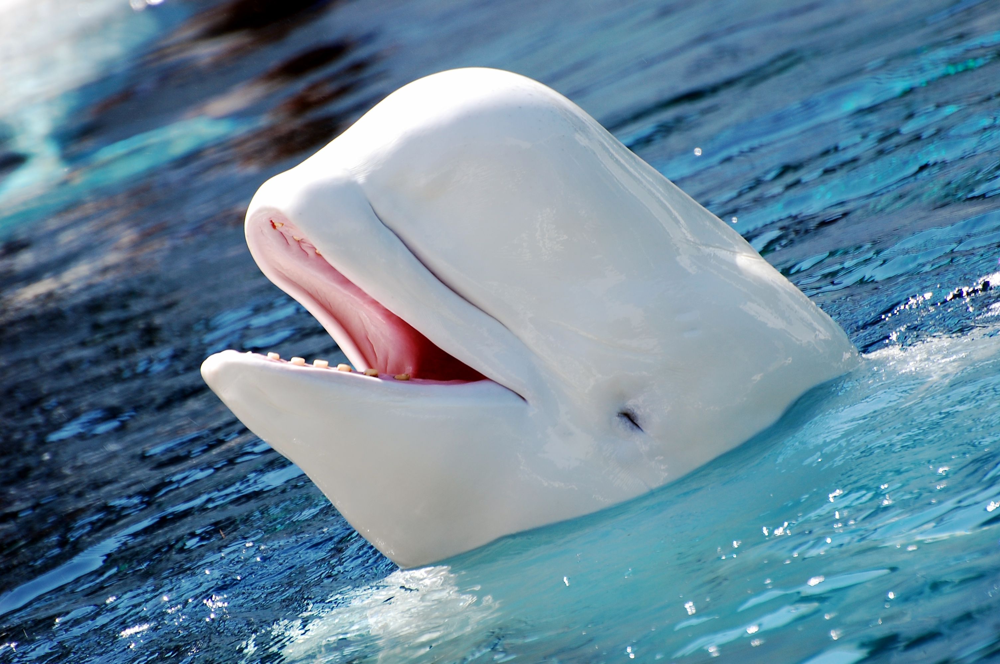

Son mamíferos marinos que miden aproximadamente 30 metros de longitud y llegan a pesar 150 toneladas, poseen un cuerpo fusiforme, tienen aletas laterales y una cola musculosa. Estas criaturas utilizan sus láminas córneas para filtrar el Plancton y el Krill que constituyen su dieta.
Las ballenas son animales grandes que viven en el agua. Las ballenas parecen peces pero, en realidad, son mamíferos. Respiran aire y producen leche para alimentar a sus crías. Las ballenas pertenecen a un gran grupo de animales llamados cetáceos. Los científicos creen que las ballenas evolucionaron de mamíferos terrestres de cuatro patas que ahora están perfectamente adaptadas a una vida submarina.
No hay que ser sabios para adivinar que la ballena vive en el mar, así que es posible que hablar sobre su hábitat te resulte un tanto innecesario. Sin embargo, hay más, pues las ballenas viven en las zonas en las que el agua está más caliente.
Es normal ver a las ballenas muy cerca de las costas en invierno, donde el agua está más calientita. Por eso, hay distintas regiones en el mundo en las que, en los meses de invierno, se avistan ballenas en sus playas.
Sin embargo, cuando el invierno está en su punto álgido, tienden a migrar a lugares más cálidos. Es curioso saber que las ballenas de mayor tamaño siempre viven en regiones frías como el ártico, ya que, gracias a su gran porcentaje de grasa corporal, pueden mantener su temperatura por ellas mismas.
Aunque muchas personas creen que las ballenas solo viven en aguas saladas, esto no es cierto, pues se pueden encontrar muchas especies de ballenas en agua dulce también. Así que, aunque tengas planeado un viaje en el que no haya playa, sino lagos en su lugar, es posible que también puedas avistar ballenas.
Hay ciertos patrones de comportamiento presentes en todas las especies de ballenas. Estos son algunos:
1.- No duermen mucho.
Las ballenas no concilian el sueño durante mucho tiempo por una sencilla razón: necesitan salir a respirar. Aunque son animales acuáticos, necesitan el oxígeno presente en el aire para la vida.
2.- Duermen con la mitad del cerebro.
Para asegurarse de que saldrán a respirar, de que podrán huir en caso de que los hombres se empeñen en su caza, solo dejan descansar la mitad de su cerebro. No obstante, es suficiente descanso para ellas.
3.- Sus genitales permanecen escondidos mientras no los usan.
Como puedes imaginar, los genitales de una ballena macho son enormes y esconderlos les permite nadar con mayor rapidez.
4.- Se llaman con chillidos.
Para dirigirse los unos a los otros y mantenerse cerca, al menos un grupo de tres o cuatro, se comunican con unos pitidos como si fueran chillidos que se pueden escuchar a kilómetros de distancia.
